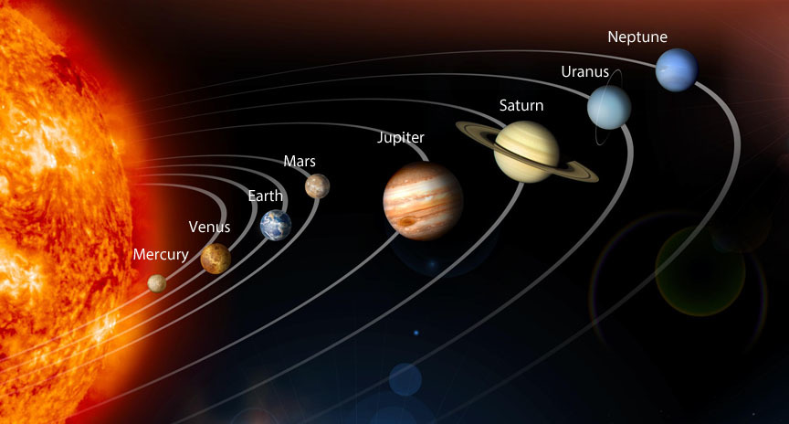

While Mars is probably the best choice we have right now due to it's distance from us, temperature, and water for us to extract as well as a variety of other reasons, let's go over each of the planets and the pros and cons of colonizing them.
Mercury - Very difficult if not impossible to colonize
Pros: There's ice at the poles which we could mine for water and oxygen
Cons: The temperatures are extremly variable ranging from 800 degrees Farenheit in the daytime to minus 290 degrees Farenheit at nighttime
Venus - Would be extremly difficult to colonize
Pros: size and gravity very similar to Earth
Cons: Has a runaway greenhouse effect and mumerous volcanoes on the surface
Mars - Probably the best planet to colonize but still harsh
Pros: Close to us and temperatures relatively close to Earth's
Cons: Large dust storms due to to temperature fluctiations as well as intense radiation from space
Jupiter - Is a gas giant so I'm gonna be focusing on one of Jupiter's moons, Europa
Pros: has low radiation levels, geologic stability and large amounts of water ice.
Cons: Has no atmosphere and has an average temperature of minus 260 degrees Farenheit
Saturn - Is also a gas giant so I'll be using Titan, one of Saturn'm moons
Pros: You wouldn't need a pressurized suit to survive
Cons: Can get as cold as -290 degrees Fahrenheit
Uranus - An ice giant so I'm gonna talk about Titania, one of Uranus' moons
Pros: There is no weather
Cons: It has no atmosphere
Neptune - Is also an ice giant so I'll be focusing on Neptune's moon Triton
Pros: Has low garvity so movement is easy
Cons: Has an average temperature of minus 391 degrees Farenheit